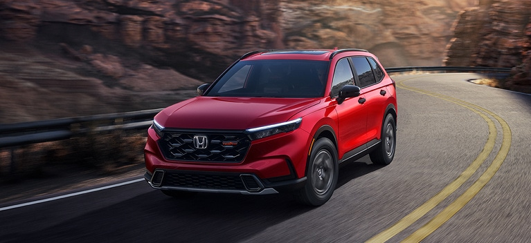
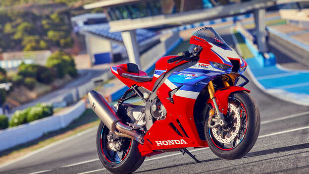
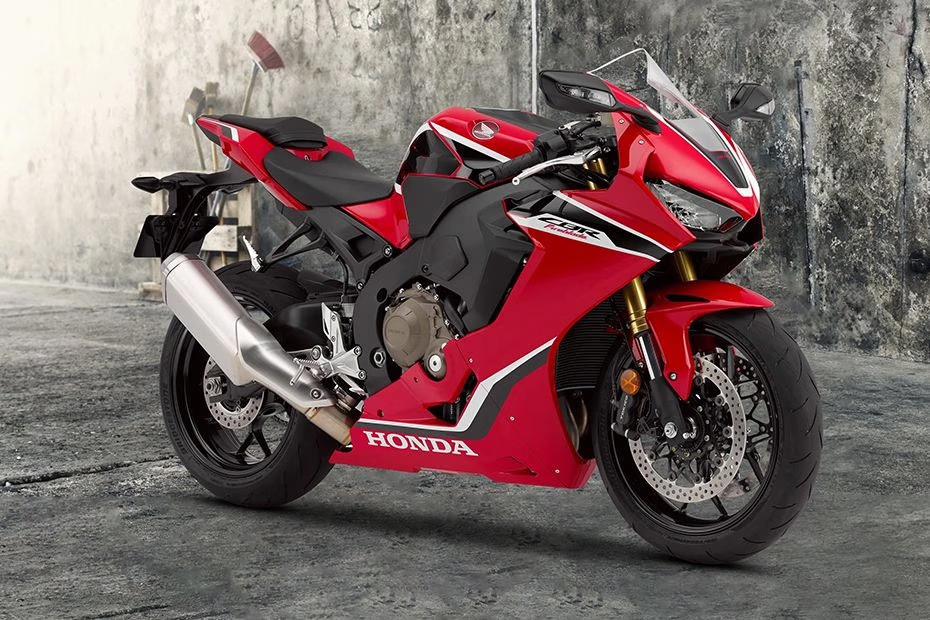
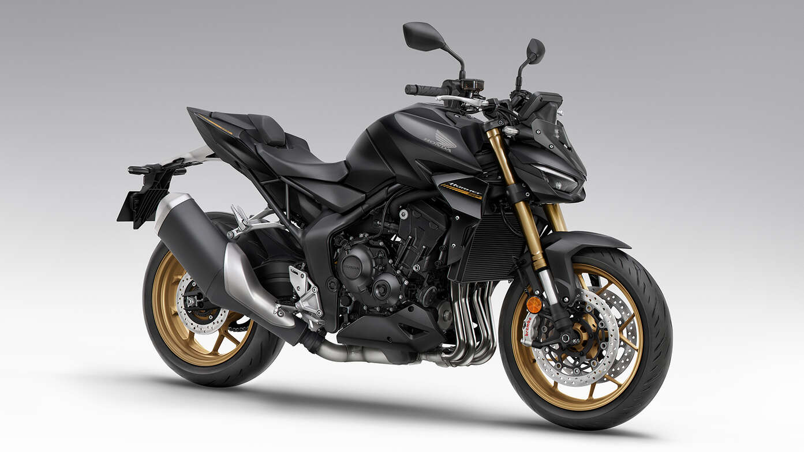
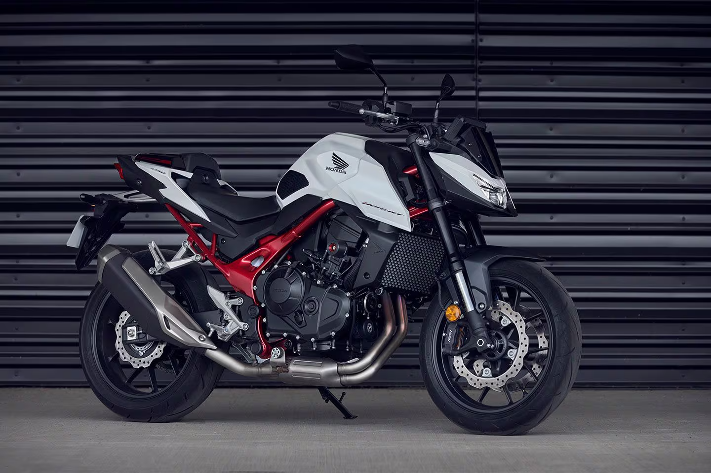

Honda CBR1000RR-R
Built for riders who want sharper aerodynamics, stronger race-inspired engineering, and maximum superbike performance.
Honda is one of the most famous motorcycle companies in the world. It is known for making strong, modern, and reliable bikes. Many people choose Honda because of its quality and good performance.
Honda motorcycles are suitable for different kinds of riders. Some bikes are great for city roads, while others are perfect for long trips or racing. Honda always tries to give comfort, safety, and style to its customers.
On this website, you can learn more about Honda motorcycles, their features, and different categories. You can also explore useful information about design, speed, and performance. Welcome to the world of Honda.
Honda is one of the most famous car companies in the world. It is known for making reliable, modern, and high-quality cars. Many people like Honda cars because they are comfortable, strong, and suitable for everyday use.
Honda offers different types of cars for different needs. Some Honda cars are perfect for families, while others are great for young drivers or people who want a sporty design. Honda cars are also known for good fuel economy and smooth driving.
Honda always focuses on safety, performance, and new technology. Its cars have a stylish design and many useful features that make driving easier and more enjoyable. Honda continues to be a popular choice for many people around the world.


The Honda Civic Type R is one of the most famous sports cars made by Honda. It is known for its strong engine, modern design, and exciting performance. Many car lovers like this model because it looks sporty and feels fast on the road. It is also one of the most popular high-performance hatchbacks in the world.
This car has a very powerful engine that gives the driver a fun and energetic driving experience. The Honda Civic Type R is made for people who enjoy speed, control, and smooth handling. It can perform very well on highways and city roads. Its design also helps improve stability and balance while driving.
The exterior design of the Honda Civic Type R is bold and attractive. It has a sporty body, large wheels, sharp lights, and a stylish rear wing. These features make the car look aggressive and modern. Many young drivers especially like this car because of its strong and unique appearance.
The Honda Civic Type R is a powerful and stylish sports car that is loved by many car fans. It is
known for its strong engine, sporty design, and excellent performance on the road. This car is a great choice
for people who want speed, comfort, and modern technology. The price of the Honda Civic Type R was
$48,000, but now there is a special discount of 10%, so the new price is only$43,200.
This offer makes the car more attractive for buyers who want a high-quality Honda sports car at a lower price.
If you want to benefit from this special discount on theHonda Civic Type R, visit this link now and explore more details about the car, its features, and the new discounted price. This offer is a great chance for anyone who wants to own a modern, powerful, and stylish Honda car at a better price.
The Honda NSX is one of the most iconic sports cars in Honda history. It is famous for its beautiful design, advanced technology, and high performance. This car is loved by many people around the world because it looks luxurious and drives like a super car. The NSX shows Honda’s ability to build powerful and modern cars.
The Honda NSX is designed for speed, power, and precision. It offers an exciting driving experience and excellent performance on different roads. The car is built with advanced engineering to give the driver strong control and smooth movement. It is a car that mixes comfort with supercar performance.
The design of the Honda NSX is very stylish and eye-catching. It has a low body, sharp headlights, wide tires, and a sleek shape that makes it look fast even when it is standing still. Its red color in the picture makes it look even more attractive and powerful. The car has a modern and premium appearance.
Inside the Honda NSX, the cabin is elegant and comfortable. It is made with high-quality materials and modern technology to give the driver a great experience. The seats are designed for comfort and support, and the dashboard has many advanced features. Honda focused on both luxury and performance in this model.
The Honda NSX is a powerful and stylish sports car that is loved by many car fans. It is known for
its strong engine, sporty design, and excellent performance on the road. This car is a great choice for people
who want speed, comfort, and modern technology. The price of the Honda NSX was $160,000, but now
there is a special discount of 10%, so the new price is only $144,000. This offer makes the car
more attractive for buyers who want a high-quality Honda sports car at a lower price.
If you want to benefit from this special discount on the Honda NSX, visit this link now and explore more details about the car, its features, and the new discounted price. This offer is a great chance for anyone who wants to own a modern, powerful, and stylish Honda car at a better price.
| Item | Honda Civic Type R | Honda NSX |
|---|---|---|
| Car Image |
|
|
| Type | Sports Hatchback | Sports Super car |
| Engine | 2.0L Turbocharged Engine | 3.5L Twin-Turbo V6 Hybrid |
| Performance | Fast, sporty, and powerful for daily driving | Very high performance with super car speed |
| Design | Bold, modern, and aggressive | Luxurious, low, and very stylish |
| Interior | Sporty seats and modern dashboard | Luxury cabin with advanced technology |
| Best For | People who want a sporty car for daily use | People who want speed, luxury, and super car feeling |
| Price | Lower price | Higher price |


The Honda CR-V is one of the most popular SUV models made by Honda. It is known for its modern design, comfortable interior, and reliable performance. Many families like this car because it offers a smooth driving experience and enough space for passengers and luggage.
The Honda CR-V is a great choice for people who want comfort, safety, and modern technology in one car. It has useful features that make driving easier, such as advanced safety systems, a stylish dashboard, and a strong engine. It is suitable for both city driving and long trips.
Overall, the Honda CR-V is a practical and stylish SUV that meets the needs of many drivers. It combines comfort, quality, and performance in a very good way. This model is perfect for people who want a family car with a modern look and dependable features.
The Honda CR-V is a modern and practical SUV that is loved by many car fans and families. It is
known for its comfortable interior, stylish design, and reliable performance on the road. This car is a great
choice for people who want comfort, safety, and modern technology in one vehicle. The price of the Honda CR-V
was$35,000 , but now there is aspecial discount of 10% , so the new price is
only$31,500 . This offer makes the car more attractive for buyers who want a high-quality Honda SUV
at a lower price.
If you want to benefit from thisspecial discount on the Honda CR-V , visit this link now and explore more details about the car, its features, and the new discounted price. This offer is a great chance for anyone who wants to own a modern, comfortable, and stylish Honda car at a better price.
The Honda HR-V is a stylish and compact SUV that is loved by many drivers around the world. It is known for its attractive design, smooth performance, and comfortable cabin. This car is a good option for people who want a modern vehicle that is easy to drive in the city.
The Honda HR-V offers a good mix of practicality and technology. It has a well-designed interior, useful safety features, and enough space for daily use. Many young drivers like this model because it looks sporty and feels comfortable on different roads.
In conclusion, the Honda HR-V is a smart choice for people who want a compact SUV with style and reliability. It is modern, efficient, and suitable for everyday driving. Honda made this car to give drivers comfort, safety, and a nice driving experience.
The Honda HR-V is a modern and stylish SUV that is loved by many car fans and families. It is known
for its comfortable interior, attractive design, and smooth performance on the road. This car is a great choice
for people who want comfort, safety, and modern technology in one vehicle. The price of the Honda HR-V
was$28,000 , but now there is aspecial discount of 10% , so the new price is
only$25,200 . This offer makes the car more attractive for buyers who want a high-quality Honda SUV
at a lower price.
If you want to benefit from this special discount on the Honda HR-V, visit this link now and explore more details about the car, its features, and the new discounted price. This offer is a great chance for anyone who wants to own a modern, comfortable, and stylish Honda car at a better price.
| Item | Honda CR-V | Honda HR-V |
|---|---|---|
| Car Image | |
|
| Type | Compact SUV | Subcompact Crossover SUV |
| Engine | 1.5L Turbocharged Engine | 2.0L 4-Cylinder Engine |
| Performance | Smooth, strong, and comfortable for family driving | Efficient, practical, and easy to drive in the city |
| Design | Modern, stylish, and bold exterior design | Sporty, compact, and youthful design |
| Interior | Spacious cabin with advanced technology and comfort | Comfortable interior with smart features and modern dashboard |
| Best For | Families and people who want comfort and space | Young drivers and people who want a stylish compact SUV |
| Price | Higher price | Lower price |
Motorcycles are one of the most popular types of vehicles in the world. Many people use them for daily transportation, travel, sport, and even work. They are smaller than cars, easier to move in traffic, and often cost less. Because of this, motorcycles are very useful in many countries.
There are many different types of motorcycles, and each type has its own purpose. Sport bikes are made for speed and performance, while cruiser bikes are made for comfort and long rides. There are also touring motorcycles, off-road bikes, naked bikes, and scooters. This variety helps people choose the motorcycle that fits their needs and lifestyle.
Motorcycles are loved by many people because they give a special feeling of freedom and adventure. Riding a motorcycle can be exciting, enjoyable, and full of energy. Some people use motorcycles for fun on weekends, while others use them every day to save time and money. For many riders, motorcycles are not just vehicles, but also a passion.
Modern motorcycles also have many advanced features and technologies. Some bikes include ABS brakes, traction control, riding modes, and digital screens. These features help improve safety, comfort, and performance. As technology continues to develop, motorcycles are becoming more efficient and easier to ride.
In conclusion, motorcycles are important vehicles that serve many different purposes. They come in many categories, styles, and designs to match different riders. Whether a person wants speed, comfort, adventure, or simple transportation, there is always a motorcycle for them. That is why motorcycles continue to be popular around the world.


The Honda CBR1000RR-R is one of the most powerful and impressive motorcycles in the world. It is known for its high performance, strong engine, and modern design. Many motorcycle fans love this bike because it offers great speed and excellent control on the road and track. It is a perfect motorcycle for riders who enjoy power, style, and excitement.
One of the most important features of the Honda CBR1000RR-R is its powerful engine. This engine gives the bike excellent acceleration and strong performance at high speed. Because of this, the motorcycle can deliver a thrilling riding experience in a short time. It is considered one of the best super bikes made by Honda.
The design of the Honda CBR1000RR-R is very sporty and attractive. It has a sharp body shape and aerodynamic parts that help improve its movement and stability. These features make the bike look fast, modern, and aggressive. Its stylish appearance makes it popular among riders who love sport motorcycles.
The Honda CBR1000RR-R also includes advanced technology that improves performance and control. It has modern systems that help the rider handle the bike better and ride more safely at high speed. These technologies make the motorcycle more stable, comfortable, and exciting to use. This is one reason why the Honda CBR1000RR-R is admired by many motorcycle lovers.
The Honda CBR1000RR-R is now available at a special discounted price for motorcycle fans.
The old price of this motorcycle was $29,000, but now there is a 10% discount,
so the new price is only$26,100. This offer is a great chance for riders who want a fast,
stylish, and powerful sport bike at a better price.
Honda CBR 1000 is one of the most exciting sport motorcycles for riders who love speed, power, and sharp design. It is famous for its strong performance, advanced engineering, and modern racing look. Many motorcycle fans admire this model because it offers both beauty and serious power on the road.
This motorcycle is designed to give the rider a confident and thrilling experience. Its engine is powerful, its body is aerodynamic, and its technology helps improve control and stability. These features make the Honda CBR 1000 a great choice for people who want a professional sport bike.
The design of the Honda CBR 1000 is bold and aggressive. It has a modern shape, stylish lights, and a sporty body that makes it stand out immediately. Its appearance shows speed and performance even when it is standing still.
The Honda CBR 1000 is also known for its smart technology and strong handling. It gives riders a balanced mix of comfort, speed, and safety. Because of this, it is loved by many people who want a premium Honda motorcycle with a powerful and sporty character.
The old price of the Honda CBR 1000 was $28,500, but now there is a special discount
of 10%, so the new price is only $25,650. This offer makes the motorcycle more attractive for
buyers who want a fast, stylish, and high-quality Honda bike at a better price.
Motorcycle Face-Off
A premium comparison layout that highlights the character, power, and riding focus of both Honda superbikes in a cleaner and more modern way.
Built for riders who want sharper aerodynamics, stronger race-inspired engineering, and maximum superbike performance.
A powerful sport bike that combines speed, strong control, and a more balanced experience for everyday performance riding.


The Honda CB1000 Hornet SP is one of the most powerful and modern naked motorcycles from Honda. It is designed for riders who love speed, strong performance, and an aggressive street fighter style. This bike combines power, technology, and a sporty look in one impressive machine.
One of the best things about the Honda CB1000 Hornet SP is its strong engine. It delivers excellent acceleration and gives the rider a thrilling experience on the road. The bike is suitable for people who want a fast and exciting motorcycle for both city rides and open roads.
The design of the Honda CB1000 Hornet SP is sharp, bold, and very attractive. It has a muscular body, modern LED lights, and a stylish naked appearance that makes it stand out. Its sporty details give it a premium and dynamic feel.
This motorcycle also includes advanced technology and high-quality features that improve comfort, safety, and control. It offers smooth handling and strong stability, which makes the rider feel more confident. It is a great choice for experienced riders who want a combination of beauty and performance.
The Honda CB1000 Hornet SP was priced at $12,500, but now it is available for only
$11,200.
This special deal gives buyers a great chance to own a powerful and premium naked motorcycle at a better price.
The Honda CB750 Hornet is a modern naked motorcycle that offers a perfect balance of power, style, and everyday usability. It is a great bike for riders who want strong performance with a fresh and sporty design. This model has become popular because it is both practical and exciting.
The engine ofthe Honda CB750 Hornet is powerful and responsive, giving the rider a smooth and enjoyable riding experience. It performs well in the city and on longer rides, making it a versatile option. Its acceleration is strong enough to satisfy riders who enjoy speed and confidence on the road.
The design of the Honda CB750 Hornet is modern and aggressive. It has a bold front look, sharp lines, and a stylish body that reflects its sporty character. The bike looks youthful and energetic, which makes it attractive to many motorcycle lovers.
In addition to its strong performance, the Honda CB750 Hornet offers comfort, balance, and modern riding technology. It is designed to give riders better control and a more enjoyable experience in different road conditions. This makes it a smart choice for both daily riding and weekend adventures.
The Honda CB750 Hornet had an old price of $9,800, but now it comes with a special offer
at a new price of $8,900.
This discount makes the bike a more attractive option for riders who want a modern naked motorcycle at a lower
cost.